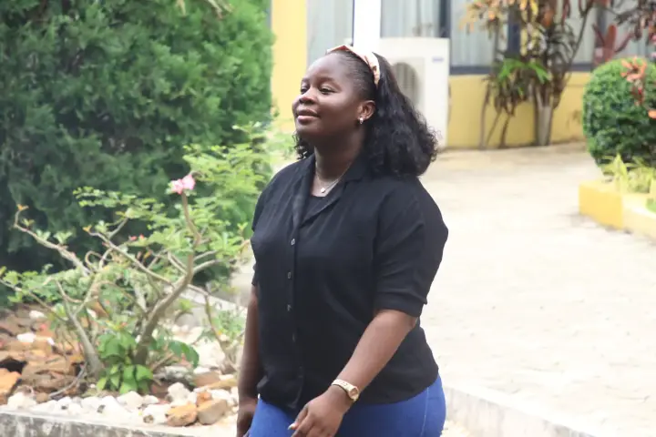
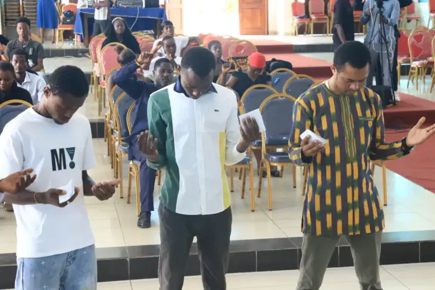
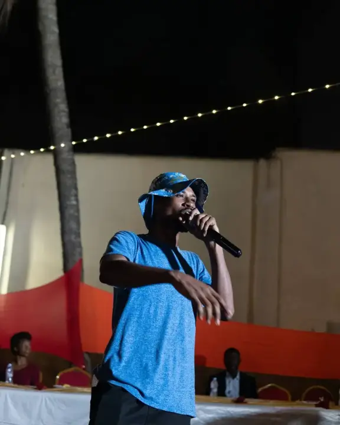
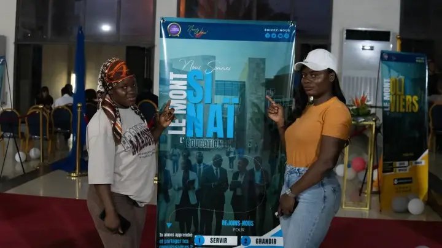

Église de jeunes adultes · Cocody-Bonoumin, Abidjan
Une armée de jeunes pour Christ.
Chaque dimanche, des jeunes se retrouvent pour louer Dieu, écouter sa Parole et grandir ensemble. Viens comme tu es.
Ta première visite
On t'attend,
sans chichis.
Une salle pleine de jeunes, une louange qui bouge et une Parole qui parle à ta vie. Voilà comment se passe un dimanche, de l'arrivée à la communion fraternelle.


12h00 · Arrivée- Dès 12h00
- Viens comme tu es
- Parking sur place
- Entrée libre
-
12h00
Tu arrives
L'équipe Parking & Sécurité t'oriente, l'Accueil te reçoit à l'entrée et te trouve une place. Pas besoin de connaître qui que ce soit.
-
12h25
Montagne
Avant le culte, on monte sur la montagne : un temps de prière ensemble pour préparer nos cœurs. Tu peux simplement te joindre à nous, personne ne te mettra la pression.
-
13h00
Le culte
Louange live avec le Chant, les Dancing Star et le Rap & Musique Urbaine, puis un message ancré dans la Bible, pensé pour ta vie du lundi au samedi.
-
15h00
Communion fraternelle
Après le culte, on reste ensemble : on se rencontre, on partage, on prend des nouvelles. C'est souvent là que les amitiés commencent.
- Itinéraire vers Cocody-Bonoumin ↗
Pourquoi « New Wine » ?
New Wine, c'est une nouvelle génération de jeunes à qui l'on transmet un enseignement nouveau. Des cœurs neufs, prêts à vivre la Parole pour de vrai, puis envoyés : sauvés pour sauver.
Notre vision
Servir. Grandir.
Impacter.

Servir
35 départements, du micro au parking. Trouve l'équipe faite pour toi.
Voir les départements →Grandir
Un message chaque dimanche, l'Académie de Fondation et les cellules de maison.
Écouter les messages →
Impacter
Sept monts, sept sphères de la société où nous sommes envoyés.
Découvrir les 7 Monts →Impacter
Les 7 Monts
Chaque membre rejoint une famille, un mont, liée à une sphère de la société. Survole les sommets et choisis le tien.
Tout savoir sur les monts →New Wine Mag · le blog
À lire
cette semaine.
Festi Grill ’26 : la rentrée en saveurs
Porc braisé, alloco, attiéké et guirlandes lumineuses : retour sur l'après-midi qui a lancé la saison.
Les 7 Monts expliqués en 5 minutes
Gouvernement, art, économie, média, éducation, famille, religion : pourquoi chaque membre rejoint un mont.
Ton premier dimanche à New Wine
Où se garer, quoi porter, combien de temps ça dure : tout ce qu'il faut savoir avant de venir.
Donner
Sème dans
la vision.
Orange Money, MTN MoMo ou Wave : ton don finance les cultes, l'évangélisation et le social, en moins d'une minute.
- Orange Money
- MTN MoMo
- Wave